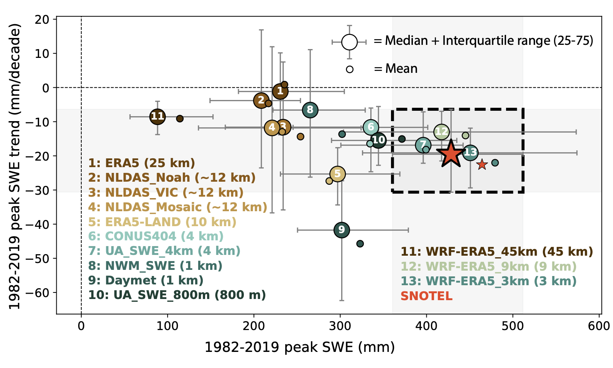
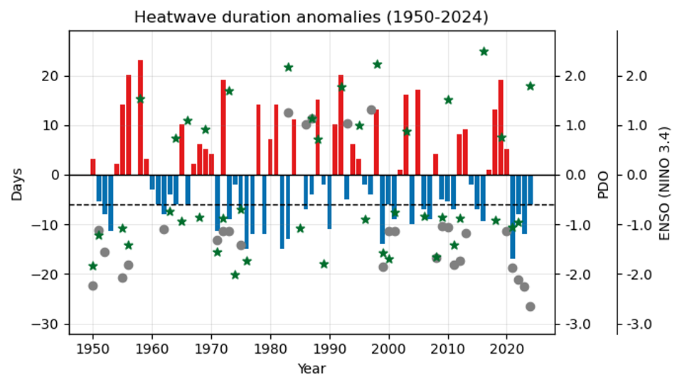
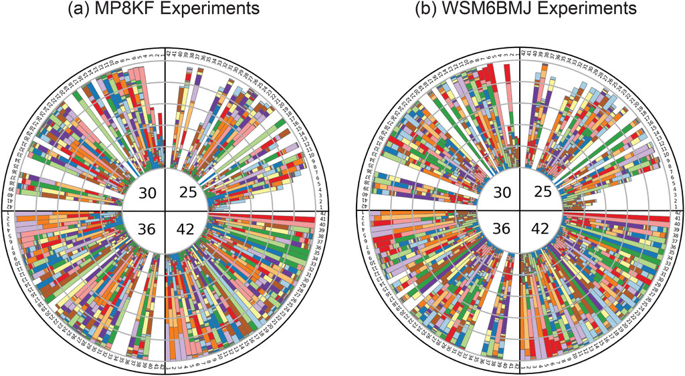
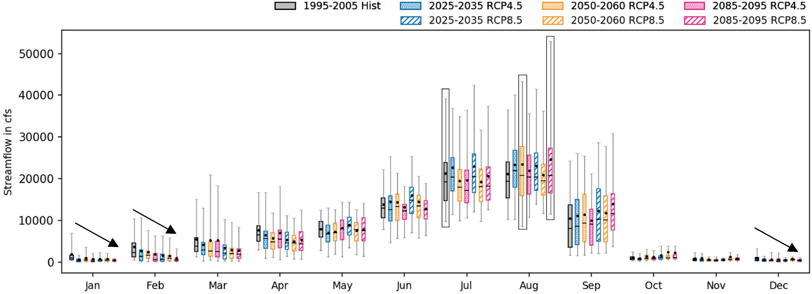
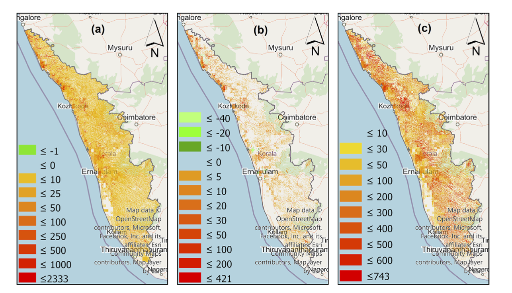

Projects
Mountain Snowpack & Model Resolution
How does model resolution change the representation of orographic processes and the long-term snowpack change signal?
I use ERA5, CESM2 Large Ensemble simulations, and WRF dynamical downscaling to examine how model resolution alters the representation of orographic processes and historical snowpack trends, and how internal variability and resolution together influence the timing and detectability of future snowpack change in the Upper Colorado River Basin.
{kind=link}

Click to enlargeCausality of the 2024 North-Central India Heatwave
How do circulation, external forcing, and land–atmosphere feedbacks interact to shape the evolution of an extreme heatwave?
This project examines the 2024 North-Central India heatwave by separating circulation-driven and residual temperature contributions and further distinguishing externally forced and internally generated components. It investigates how anomalous large-scale circulation initiated and sustained the event, while soil-moisture depletion and land–atmosphere feedbacks increasingly amplified surface heating as the heatwave evolved.
{kind=link}

Click to enlargeOptimizing WRF-Hydro Calibration in a Himalayan Basin
How do precipitation forcing and parameter sensitivity influence hydrologic calibration in complex mountain terrain?
This work evaluates WRF-Hydro calibration in a Himalayan basin, with emphasis on precipitation influence and parameter sensitivity. The project develops a more process-aware approach to representing mountain hydrology under uncertain atmospheric forcing.
{kind=link}

Click to enlargeCoupled Glacier–Atmosphere–Hydrology Modeling of the Beas Basin
How do changes in climate forcing propagate through atmospheric, snow, glacier, and hydrological processes to reshape water availability in high-mountain basins?
My Ph.D. work used high-resolution dynamical downscaling coupled with glacier and hydrological modeling to investigate hydroclimate change in the Beas River basin. The work examined how different climate forcings alter precipitation, snow and glacier melt, and their relative contributions to river discharge across historical and future periods.
{kind=link}

Click to enlargeLand-Cover Change and the 2018 Kerala Megaflood
How might the impacts of an extreme flood differ under alternative land-cover conditions?
This study uses the August 2018 Kerala megaflood as a counterfactual experiment to quantify how historical land-use and land-cover changes influenced flood characteristics. It examines changes in surface-water height, inundation, and flood persistence to isolate the contribution of landscape change to the magnitude and spatial extent of the event.
{kind=link}

Click to enlarge